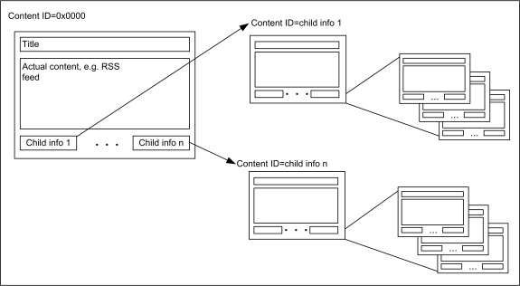
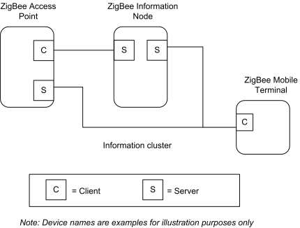
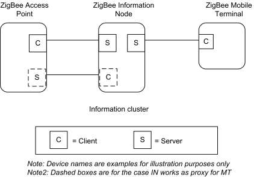
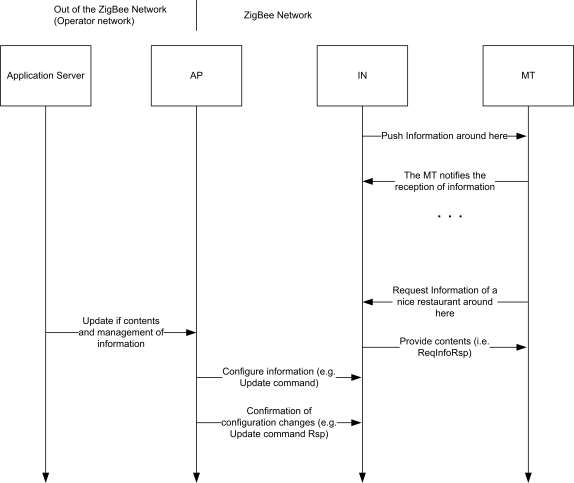
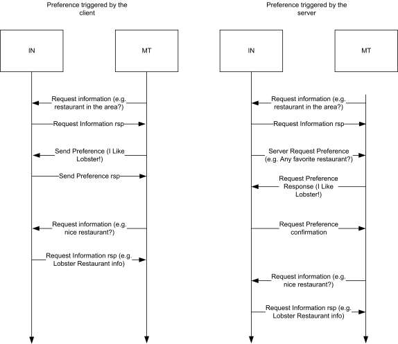
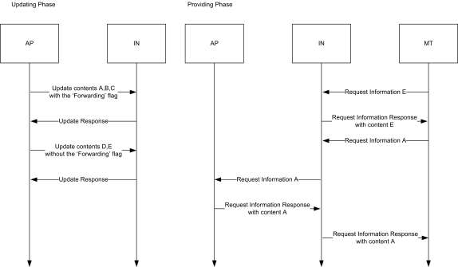
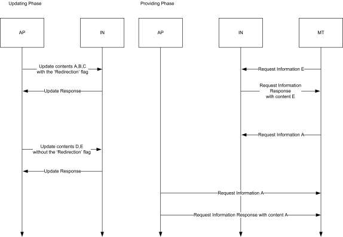
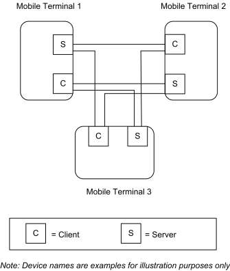
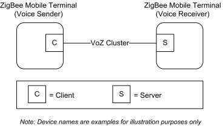

CHAPTER 12 TELECOMMUNICATION
The Cluster Library is made of individual chapters such as this one. See Document Control in the Cluster Library for a list of all chapters and documents. References between chapters are made using a X.Y notation where X is the chapter and Y is the sub-section within that chapter. References to external documents are contained in Chapter 1 and are made using [Rn] notation.
12.1 General Description ¶
12.1.1 Introduction ¶
The clusters specified in this chapter are for use typically in telecommunication applications but may be used in any application domain.
12.1.2 Cluster List ¶
This section lists the clusters specified in this chapter and gives examples of typical usage for the purpose of clarification. The clusters specified in this chapter are listed in Table 12-1.
Table 12-1. Telecom Cluster List ¶
| ID | Cluster Name | Description |
|---|---|---|
| 0x0900 | Information | Commands and attributes for information delivery |
| 0x0905 | Chatting | Commands and attributes for sending chat messages |
| 0x0904 | Voice Over ZigBee | Commands and attributes for voice receiving and transmitting |
12.2 Information ¶
12.2.1 Scope and Purpose ¶
This section specifies the Information cluster, which provides commands and attributes for information delivery service on ZigBee networks and also specifies three types of special nodes on which this cluster works. The Information Node (IN) provides information contents in both pull-based and push-based information delivery to a mobile terminal. The contents may have links to other contents and thus they may be organized in a structure. The Mobile Terminal (MT) is used by an end-user to retrieve information from the IN. The Access Point (AP) node updates contents stored in an IN and has a role of gateway connected to the operator network. The AP is also assumed to be a ZigBee coordinator which forms a network with INs and MTs. APs may function as an IN.
Information Delivery Service in this document is considered ‘Pull-based delivery’ and ‘Push-based delivery’. Both methods are provided by a single cluster, the information cluster.
Figure 12-2 shows typical usage of the cluster. This cluster may use Partition cluster. ¶
12.2.1.1 Data Structure of Contents Data ¶
Typical data structure of contents data is as illustrated in Figure 12-1. Each content data has its Content ID, which is used when the client cluster requests content to the server cluster.
A content data includes ‘the title strings’, ‘actual content’, ‘number of child contents’ and ‘children’s content IDs’.
To let each content data have its children content data makes it enables to organize list-structure or treestructure and obtain a hierarchical content data structure, and a user who uses information delivery can request information along to child information links.
To obtain the first contents ID, there are methods, reading server attribute ‘Root ID’, using ID sent by outof-band like via GPRS network and using ID provided by another telecom application clusters (ex. Payment or gaming).
Figure 12-1. Typical Content Data Structure ¶

12.2.2 Cluster List ¶
A cluster specified in this document is listed in Table 12-2.
Server cluster is expected to be implemented in the Information Node. Client cluster (including functions related to contents provisioning) is expected to be implemented in the Mobile Terminal. The update command and configuration commands are expected to be implemented in the Access Point. The Access Point may have functionality of the Information node and it has server cluster in that case. Some user specific content is provided with processing user-side information, defined as a preference. If a preference needs to be processed not in the Information Node but in an Access Point or in a server beyond the Access Point as a gateway, information indicates the Access Point’s ID so that the Mobile Terminal can switch to access it (as illustrated in Figure 12-3) or the Information Node acts as proxy and access the Access Point with client function to forward preference, commands to the Access Point and contents to the Mobile Terminal (as illustrated below).
Table 12-2. Clusters Specified for the Information Delivery ¶
| Cluster Name | Description |
|---|---|
| Information cluster | Attributes and commands for providing Information service to a ZigBee device. |
Figure 12-2. Typical Usage of the Information Cluster ¶

Figure 12-3. Typical Usage of the Information Cluster – with Proxy Function ¶

12.2.3 Overview ¶
Please see Chapter 2 for a general cluster overview defining cluster architecture, revision, classification, identification, etc.
This cluster provides attributes and commands for Information Delivery Service.
12.2.3.1 Revision History ¶
The global ClusterRevision attribute value SHALL be the highest revision number in the table below.
| Rev | Description |
|---|---|
| 1 | mandatory global ClusterRevision attribute added;CCB 1811 1812 1821 |
12.2.3.2 Classification ¶
| Hierarchy | Role | PICS Code | Primary Transaction |
|---|---|---|---|
| Base | Application | TELIN | Type 2 (server to client) |
12.2.3.3 Cluster Identifiers ¶
| Identifier | Name |
|---|---|
| 0x0900 | Information (Telecom) |
12.2.4 Server ¶
The Information Node (IN) has a server cluster which provides information delivery service. A client cluster in Mobile Terminal (MT) requests information and the IN responds with requested contents on pull-based delivery. The IN server cluster can provide push-based delivery the client cluster in the MT (if properly configured).
Content may have links to the other contents. A link is called as child information in this document and it is represented as a ContentID. Contents can be organized in tree-structure.
Content may be one of three explicitly specified types: octet strings, character strings or RSS feed, so that the browser in the MT can understand easily what content it should access.
Cluster also provides such function that the client cluster in the AP can update contents and delete them in the IN.
Preference is used for carrying user-side information to let the IN provide user specific contents based on the user-side information. Contents may be modified along with that information on the IN. An example scenario of Information cluster is illustrated in Figure 12-4.
A preference may be processed not in an IN but in an AP or in a server beyond the AP as a gateway. In that case, the IN needs to have client function to forward preference, commands and contents as proxy for MT (Forwarding scenario) or the IN needs to inform the MT to switch its access from the IN to the AP (Redirection scenario). The Cluster supports both scenarios. If the preference, commands and contents are forwarded by the IN between the MT and the AP, they may be just relayed transparently through the IN, or they may be processed by the IN. The IN may process the preference before forwarding it, and may process the stored preference together with the contents to create the customized contents after receiving the response from the AP, then sending the contents to the MT.
Figure 12-4. An Example Sequence ¶

Pull-based service is expected to work as follows:
11. It provides decentralized contents distributed by Update command from the central node (the AP).
(e.g., tree-structure contents distribution, specific permission to peep the contents to the authorized user) 12. Advanced application program provides service in conjunction with the other functions like a Loca-
tion cluster, or the preference data from the MT. (e.g., direction service based on the location information of user, push service matching individual attribute – invitation of a test drive of new car to men in thirties which hobby is driving or etc.) 13. Hybrid service of the item a. and b.
The preference format is application dependent and is used by the service like the item b. Of course the application uses the preference shall have the ability to parse it. If the application doesn’t have the ability, it shall report it that. The cluster provides a status code to inform it. For example, let’s assume the IN provides service like item a. and the AP connected a network out of the ZigBee and an application server is deployed there. First the MT access to the IN to get general contents for the all of users. The IN can provide simple contents to the MT. Second, the MT request a content – good restaurant to the IN, which content is indicated to redirect to the AP. The MT switch its access to the AP. The AP requests preference to the MT to get userside information, favorite food in the example. The AP sends the preference to the application server and it replies with the food restaurant which the user likes. Thus the AP can provide the content modified along with user-side information – the restaurant which provides he likes – to the MT. The example illustrated in
Figure 12-5. ¶
Figure 12-5. Preference Scenarios (Triggered by the Client or by the Server) ¶

12.2.4.1 Dependencies ¶
None
12.2.4.2 Attributes ¶
For convenience, the attributes defined in this specification are arranged into sets of related attributes; each set can contain up to 16 attributes. Attribute identifiers are encoded such that the most significant three nibbles specify the attribute set and the least significant nibble specifies the attribute within the set. The currently defined attribute sets are listed in Table 12-3.
Table 12-3. Information Cluster Attribute Sets ¶
| Attribute Set Identifier | Description |
|---|---|
| 0x000 | Node Information |
| 0x001 | Contents Information |
| 0x002 – 0xfff | Reserved |
12.2.4.2.1 Node Information Attribute Set ¶
The Node Information attribute set contains the attributes summarized in Table 12-4.
Table 12-4. Node Information Attribute Set ¶
| Id | Name | Type | Range | Ac- cess | M/O |
|---|---|---|---|---|---|
| 0x0000 | NodeDescription | string | R | M | |
| 0x0001 | DeliveryEnable | bool | 0x00 – 0x01 | R | M |
| 0x0002 | PushInformationTimer | uint32 | R | O | |
| 0x0003 | EnableSecureConfiguration | bool | 0x00 – 0x01 | R | M |
12.2.4.2.1.1 NodeDescription Attribute ¶
This NodeDescription Attribute holds strings which indicate what Information Delivery service is available so that an end-user can select and distinguish this service.
12.2.4.2.1.2 DeliveryEnable Attribute ¶
The Delivery Enable attribute is Boolean and indicates whether the cluster is able to communicate with the other nodes. It is a read only attribute but it can be changed by using the Configure Delivery Enable command. If it is set to TRUE (0x01), the Information cluster is able to manage the following commands: Request Information, Push Information Response, Send Preference and Request Preference Response.
12.2.4.2.1.3 PushInformationTimer Attribute ¶
The Push Information Timer is an Unsigned 32-bit integer and indicates whether the cluster is able to send Push Information command and the time between those commands. It is a read only attribute but it can be changed by using the Configure Push Information timer command. If this attribute is set to 0, then the automatic Push Information is disabled, otherwise the value is considered as an interval (in milliseconds) that elapses between Push Information commands. If this attribute is set to 0, it's still possible for the device to push information triggered by an event such as button being pushed.
12.2.4.2.1.4 EnableSecureConfiguration Attribute ¶
The Enable Secure Configuration attribute is a Boolean and indicates whether an application layer security is required in order to process the configuration commands: Update, Delete, Configure Delivery Enable, Configure Set Root ID, Configure Node Description, Configure Push Information timer. If this attribute is set to TRUE, then server side of the cluster need to use application link keys for processing those commands. If FALSE, then all the commands can be processed without using link keys.
12.2.4.2.2 Contents Information Attribute Set ¶
The Node Information attribute set contains the attributes summarized in Table 12-5.
Table 12-5. Contents Information Attribute Set ¶
| Identifier | Name | Type | Range | Access | M/O |
|---|---|---|---|---|---|
| 0x0010 | NumberOfContents | uint16 | 0x0000 - 0xFFFF | R | O |
| 0x0011 | ContentRootID | uint16 | 0x0000 - 0xFFFF | R | O |
12.2.4.2.2.1 NumberOfContents Attribute ¶
This attribute holds the total number of contents which this server node has. It should reflect the result of updating command by AP. This attribute holds the total number of contents which this server node has. If the number is more than 0xffff, this attribute shall be set to 0xffff.
12.2.4.2.2.2 ContentRootID Attribute ¶
This attribute holds root Content ID of octet strings, character string and RSSFeed Contents. ContentRootID is a start pointer so that user can access variety contents. If this attribute doesn’t exist, there are no contents. 0xffff for this attribute means it is not specified yet.
12.2.4.3 Commands Received ¶
The received command IDs for the information cluster are listed in Table 12-6. Please notice that at least one of the commands shall be implemented though they are defined as optional.
Table 12-6. Received Command IDs for the Information Cluster ¶
| Id | Description | M/O | Command Type |
|---|---|---|---|
| 0x00 | Request Information | M | Operation |
| 0x01 | Push Information Response | M | Operation |
| 0x02 | Send Preference | O | Operation |
| 0x03 | Request Preference Response | O | Operation |
| 0x04 | Update | O | Configuration |
| 0x05 | Delete | O | Configuration |
| 0x06 | Configure Node Description | O | Configuration |
| 0x07 | Configure Delivery Enable | O | Configuration |
| 0x08 | Configure Push Information Timer | O | Configuration |
| 0x09 | Configure Set Root ID | O | Configuration |
12.2.4.3.1 Request Information Command ¶
This is a command requesting information as a list, as a content of text strings and as an RSS feed from mobile terminal to the Information Node or to the Access Point. An Information Node (or an Access Point) that receives this command shall reply by Request Information Response Command with requested information to the sender of this command. It specifies how to indicate content By the ‘Inquiry Type’ and also specifies what data type of content is requested by the ‘Data Type ID’. For example, in pull scenario, MT gets contents list, sending this command (e.g., Inquiry ID = ‘Request by depth’) and receiving Request Information Response Command with the list of titles. By another Request Information Command indicating contents ID, MT can get an individual content.
12.2.4.3.1.1.1 Frame Format ¶
The Request Information command shall be formatted as illustrated in Figure 12-6.
Figure 12-6. Payload Format of Request Information Command ¶
| Octets | 1 | 1 | Variable |
|---|---|---|---|
| Data Type | enum8 | map8 | See 12.2.4.3.1.2 |
| Field Name | Inquiry ID | Data Type ID | Request Information Payload |
Inquiry ID shall be set as one of IDs listed in Table 12-7.
Data Type ID indicates what type of contents the response command requires. It shall be formatted by combination of bitmasks described in Table 12-8. A bit for ‘Title’ indicates the request requires ‘Title strings’ and it can be combined other type of contents. Flagging ‘Title’ bit means a request title be attached and the other bits used for filter. If ‘Title’ bit, ‘Octet’ bit and ‘RSS’ bit are flagged, that means request is “Octet content attached title and RSS content attached title are required.” In the case that the only ‘Title’ bit is flagged, the request means “Just titles are required.” Please notice that all the contents shall maintain a title in the local database.
Table 12-7. Inquiry ID ¶
| Inquiry ID | Description | M/O |
|---|---|---|
| 0x00 | Request a content by a content ID | M |
| 0x01 | Request contents by multiple IDs | O |
| 0x02 | Request all | O |
| 0x03 | Request by depth | O |
Table 12-8. Data Type IDs ¶
| Data Type ID | Bit Mask | Description |
|---|---|---|
| 0x01 | 0000 0001 | Title |
| 0x02 | 0000 0010 | Octet String |
| 0x04 | 0000 0100 | Character String |
| 0x08 | 0000 1000 | RSS Feed |
| 0x1X – 0xfX | - | Reserved |
12.2.4.3.1.2 Request Information Payload ¶
Request Information Payload changes along with Inquiry ID listed in Table 12-7. Payload formats for each Inquiry ID are described following sections.
12.2.4.3.1.3 Inquiry ID ¶
12.2.4.3.1.3.1 Format for Request a Content by a Content ID ¶
The command with this ID requests a single content by a Content ID. Format is illustrated in Figure 12-7.
A server shall respond Request Information Response command with a content indicated by the content ID.
Figure 12-7. Payload Format for Request a Content by a Content ID ¶
| Octets | 2 |
|---|---|
| Data Type | uint16 |
| Field Name | Content ID |
12.2.4.3.1.3.2 Format for Request Contents by Multiple IDs ¶
The command with this ID requests several contents by indicating several content IDs. It shall be formatted as illustrated in Figure 12-8.
A server shall respond Request Information Response command with contents indicated by content IDs.
Figure 12-8. Request Information Payload for Request Contents by Multiple IDs ¶
| Octets | 2 | 2 | … | 2 |
|---|---|---|---|---|
| Data Type | uint16 | uint16 | uint16 | |
| Field Name | Content ID 1 | Content ID 2 | … | Content ID n |
12.2.4.3.1.3.3 Format for Request All ¶
The command with this ID requests all contents. No payload format is specified and it should be empty.
A server shall respond Request Information Response command with all contents.
12.2.4.3.1.3.4 Format for Request by Depth ¶
Upon receipt of the command with this ID, server shall reply Request Information Response command with concatenated contents indicated by Start ID and Depth. Request Information Payload format for this ID is specified in Figure 12-9.
Start ID field holds content ID for starting point to retrieve structured contents.
Depth field holds how many levels to request from Start ID tracing child information. If a depth equals to 0x00, the requested content should be single content of Start ID itself.
Server shall provide concatenated contents, which needs a prevention of duplication induced by the loop of links. (For example, if the content has a child content which child ID refers its parent (A→B, B→A), there is a loop. If the requester indicates 2 for the depth and requests content "A", searching child information would be like as A→B→A. However only content A and B should be carried in this case).
Figure 12-9. Request Information Payload for Request by Depth ¶
| Octets | 2 | 1 |
|---|---|---|
| Data Type | uint16 | uint8 |
| Field Name | Start ID | Depth |
12.2.4.3.2 Push Information Response Command ¶
This command is used by the client to notify the reception of the data carried by Push Information Command, and it is used by the server to confirm if it is correctly stored or not into MT. This command shall not be used if the Push Information Command is sent by broadcast. It is to prevent explosion of response.
Payload format shall be as illustrated in Figure 12-10.
Figure 12-10. Payload Format of Push Information Response Command ¶
| Octets: | 2 | 1 | … | 2 | 1 |
|---|---|---|---|---|---|
| Field: | Notification 1 | … | Notification n | ||
| Content ID 1 | Status Feedback 1 | Content ID n | Status Feedback n |
Notification field has two sub-fields, content ID and Status Feedback. Content ID indicates what content the notification has the status for. Status Feedback indicates the status of the reception of the content.
Possible message for Status Feedback are SUCCESS, FAILURE, MALFORMED_COMMAND, UN- SUP_COMMAND, INVALID_FIELD, INSUFFICIENT_SPACE and FAILURE230.
12.2.4.3.3 Send Preference Command ¶
This command carries a preference that is specific information of interest for the user, from the client to the server. Upon receipt of this command on the server, the server application may modify or change user specific contents along with preference information. The type of data put into the preference is based on the Preference Type field. Payload format for this command shall be as illustrated in Figure 12-11.
Figure 12-11. Payload Format for Send Preference Command ¶
| Octet: | 2 | Variable |
|---|---|---|
| Field | Preference Type | Preference Payload, see Table 12-9 |
The Preference Type determines the format of the preference Payload. All devices must support Preference Type of 0x0000.
Table 12-9. Preference Type ¶
| Preference Type | Description |
|---|
230 CCB 2477 status code cleanup
| 0x0000 | Preference is Multiple Content ID |
|---|---|
| 0x0001 | Preference is Multiple Octet Strings |
| 0x0002 – 0x7fff | Reserved |
| 0x8000 – 0xfffb | Used for Vendor Specific Format |
| 0xfffc – 0xffff | Reserved |
Figure 12-12. Payload Format for Preference Is Multiple Content ID (0x0000) ¶
| Octets | 1 | 2 | … | 2 |
|---|---|---|---|---|
| Data Type | uint8 | uint16 | … | uint16 |
| Field Name | Count | Content ID 1 | Content ID N (based on Count) |
Figure 12-13. Payload Format for Preference Is Multiple Octet Strings (0x0001) ¶
| Octets | 1 | Variable (1-256) | … | Variable (1-256) |
|---|---|---|---|---|
| Data Type | uint8 | octstr | … | octstr |
| Field Name | Count | Preference Data 1 | Preference Data N (based on Count) |
As described in Figure 12-5 there are two scenarios for the preference:
35. Preference triggered by server side (Information Node or Access Point):
- IN (Request Information) MT •
IN → (Request Information Response) → MT •
IN → (Server Request Preference) → MT •
IN (Request Preference Response) MT •
IN → (Request Preference Confirmation) → MT •
IN (Request Information) MT •
IN → (Request Information Response) → MT
36. Preference triggered by client side (e.g., Mobile terminal):
- IN (Request Information) MT •
IN → (Request Information Response) → MT •
IN (Send Preference) MT •
IN → (Send Preference Response) → MT •
IN (Request Information) MT •
IN → (Request Information Response) → MT
12.2.4.3.4 Request Preference Response Command ¶
This command carries a preference as a response of ‘Server Request Preference’ command on pull-basis. Format shall be as illustrated in Figure 12-14.
Figure 12-14. Payload Format of Request Preference Response Command ¶
| Octets: | 1 | 2 | Variable |
|---|---|---|---|
| Field: | Status Feedback | Preference Type | Preference Payload, see Table 12-9 |
Status Feedback carries a message as a response to previous ‘Server Request Preference’ command. Possible messages are SUCCESS, FAILURE, NOT_FOUND, MALFORMED_COMMAND, UNSUP_ COMMAND, INVALID_FIELD and FAILURE231. Besides, REQUEST_DENIED is included to these messages for this cluster specification.
12.2.4.3.5 Update Command ¶
Server cluster in the IN which receives this command from the AP shall updates contents by the one which the command carried except that there is an error in the IN. Update command also indicates various control to the contents by the control fields. Control fields affect to all of contents carried by the Update command, so contents required to be indicated different control should be carried by another Update command.
Payload format is as illustrated in Figure 12-15.
Figure 12-15. Payload Format for Update Command ¶
| Octet | 1 | 1 | Variable |
|---|---|---|---|
| Data Type | enum8 | map8 | Payload Format for Multiple Content |
| Field Name | Access Control Field | Option Field | Contents Data |
12.2.4.3.5.1 Access Control Field ¶
Access Control Field is 8-bit enumeration and is used to indicate security level for the validation to access the contents which are carried by the Update command. All of contents carried by the Update command shall be affected by this control field. The enumeration values are listed up in Table 12-10.
Table 12-10. Value of the Access Control Field ¶
| Access Control Mode Value | Description |
|---|---|
| 0x00 | Free to access |
| 0x01 | Link key establishment based |
| 0x02 | Billing based |
| 0x03 – 0xfe | Reserved |
231 CCB 2477 status code cleanup
| Access Control Mode Value | Description |
|---|---|
| 0xff | Vendor Specific |
Free to access: All of the clients is permitted to access the contents without special validation.
Link key establishment based: The client to access to the IN shall be required to establish link key establishment to achieve the contents. Contents shall be encrypted by the link key.
Billing based: The client to access the contents is required to finish the Billing cluster procedure.
Vendor specific: No special method is defined in this document. The application defines it. (Out-of-box, out-of-band, etc.)
12.2.4.3.5.2 Option Field ¶
Option Field is used for advanced indication while updating contents. Forwarding flag, Redirection flag, Overwrite update flag are defined in the current version. The ‘Forwarding’ flag or the ‘Redirection’ flag are used to indicate ‘content’ so that the commands of request and response related to the indicated ‘content’ shall be forwarded or redirected to the AP. If both ‘Forward’ flag and ‘Redirection’ flag are 1, the server cluster shall reply the INVALID_FIELD by the Update Response command.
The format is as illustrated in Figure 12-16.
Figure 12-16. Format for Redirection Control Field ¶
| Bits: 1 | 1 | 1 | 5 |
|---|---|---|---|
| Forward | Redirection | Overwrite update | Reserved |
Forward flag: The Information Node is required to forward messages from the MT to the AP and message from the AP to the MT with acting as proxy. All the requests from the MT for the contents updated with this flag are forwarded to the AP. A Preference from the MT is also sent to AP if the IN has it. The AP answers the response command to the IN with requested contents and they are forwarded to the MT similarly. Figure 12-17 shows an example usage of forwarding.
Figure 12-17. An Example Sequence of Forwarding Case ¶

Redirection flag: A client requested the contents indicated by this flag shall receive Request Information Response command with Status feedback ‘INDICATION_REDIRECTION_TO_AP’. The client is required to switch to access from the Information Node to the Access Point. This flag makes MT enable to switch access to AP automatically without user’s operation (Like that user access the child content). For example, let IN have general site-dependent information and content depends on user-side information generated by a server beyond the operator network which AP is connected. Figure 12-18 shows an example usage of redirecting.
Figure 12-18. An Example Sequence of Redirecting Case ¶

Overwrite: For the case that the IN has already contents corresponding to the one required to Update, the command indicates if it can be overwritten or not. If it is 0b1, the contents carried by the Update command overwrites the contents which the IN has. If it is 0b0, overwriting is not permitted. In that case, the error ‘FAILURE’ on Update Response command is issued by the IN and the command is ignored if the IN has corresponding contents.
12.2.4.3.6 Delete Command ¶
Server cluster in the IN which receives this command from the AP shall delete contents by the one which the command carried except that there is an error in the IN. Delete command also indicates various control to the contents by the control fields. Control fields affect to all of contents carried by the Delete command, so contents required to be indicated different control should be carried by another Delete command.
Payload format is as illustrated in Figure 12-19.
Figure 12-19. Payload Format for Delete Command ¶
| Octet | 1 | 2 | … | 2 |
|---|---|---|---|---|
| Data Type | map8 | uint16 | … | uint16 |
| Field Name | Deletion Option | ContentID 1 | … | ContentID n |
12.2.4.3.6.1 Deletion Option Field ¶
Deletion Option field enables various deletion functions. The format is as illustrated in Figure 12-20.
Figure 12-20. Format for Deletion Option Field ¶
| Bits: 1 | 2-8 |
|---|---|
| Recursive | Reserved |
Recursive: If it is 0b1, all the sub tree starting for the content carried by the Delete command are deleted. If it is 0b0, only the content carried by the Delete command is deleted. How the children are linked to the rest of the tree is out of scope of this document, it is application dependent.
12.2.4.3.7 Configure Node Description ¶
Payload format for the Configure Node Description command shall be as illustrated in Figure 12-21.
Upon recipient of this command, the server cluster shall change its Node Description attribute to the value of the “Description” field in this command. The use of this specific command guarantees that Node Description attribute can be reconfigured only when Delivery Enable attribute is set to TRUE. Upon reception of this command the recipient will reply with Default Response with status field equal to SUCCESS (if the requester set the Disable Default response bit of ZCL header to 0). The Configure Node Description command will be acknowledged with Default Response with status field equal to NOT_AUTHORIZED in case the recipient entity requires a secure link for configuration (i.e., Enable Secure Configuration attribute set to TRUE) while the sender didn’t use the proper link key for sending the configuration commands.
Figure 12-21. Payload Format for Configure Node Description Command ¶
| Octets | Variable |
|---|---|
| Data Type | string |
| Field Name | Description |
12.2.4.3.8 Configure Delivery Enable ¶
Payload format for the Configure Delivery Enable command shall be as illustrated in Figure 12-22.
Upon recipient of this command, the server side of the Information cluster should set the value present in the ‘Enable flag’ field into the Delivery Enable attribute. Note that, if Enable Secure Configuration attribute is set to TRUE (0x01) this command should be handled only whether the entity sending this message will have previously set up its link key with the recipient entity.
If the ‘Enable flag’ is set to FALSE (0x00), the server cluster shall stop the information delivery service. However the device supporting this server cluster (i.e., Information node) shall still accept those commands needed to configure the node: Update, Delete, Configure Node Description, Configure Delivery Enable, Configure Push Information timer and Configure Set Root ID.
All cluster specific commands except from “configuration” commands will be replied by their respective responses with status code REQUEST_DENIED if the Delivery Enable attribute is disabled.
The Configure Delivery Enable command will be acknowledged with Default Response with status field equal to NOT_AUTHORIZED in case the recipient entity requires a secure link for configuration (i.e., Enable Secure Configuration attribute set to TRUE) while the sender didn’t use the proper link key for sending the configuration commands.
Figure 12-22. Payload Format for Configure Delivery Enable Command ¶
| Octets: | 1 |
|---|---|
| Field: | Enable flag |
12.2.4.3.9 Configure Push Information Timer ¶
Payload format for the Configure Push Information Timer command shall be as illustrated in Figure 12-23.
Upon recipient of this command, the server side of the Information cluster shall change its Push Information timer attribute to the value of the ‘Timer’ field carried in this command.
The Configure Push Information Timer command will be acknowledged with Default Response with status field equal to NOT_AUTHORIZED in case the recipient entity requires a secure link for configuration (i.e., Enable Secure Configuration attribute set to TRUE) while the sender didn’t use the proper link key for sending the configuration commands.
Figure 12-23. Payload Format for Configure Push Information Timer Command ¶
| Octets: | 4 |
|---|---|
| Field: | Timer |
12.2.4.3.10 Configure Set Root ID ¶
Payload format for the Configuration Set Root ID command shall be as illustrated in Figure 12-24.
Upon recipient of this command, the server side of Information cluster shall change its Root ID attribute to the value of the ‘Root ID’ field in this command.
The Configure Set Root ID command will be acknowledged with Default Response with status field equal to NOT_AUTHORIZED in case the recipient entity requires a secure link for configuration (i.e., Enable Secure Configuration attribute set to TRUE) while the sender didn’t use the proper link key for sending the configuration commands.
Figure 12-24. Payload Format for Configure Set Root ID Command ¶
| Octets: | 2 |
|---|---|
| Field: | Root ID |
12.2.4.4 Commands Generated ¶
The generated command IDs for the Information cluster are listed in Table 12-11. Please notice that at least one of the following commands shall be implemented.
Table 12-11. Generated Command IDs for the Information Cluster ¶
| Command Identifier Field Value | Description | M/O | Command Type |
|---|---|---|---|
| 0x00 | Request Information Response | M | Operation |
| 0x01 | Push Information | M | Operation |
| Command Identifier Field Value | Description | M/O | Command Type |
|---|---|---|---|
| 0x02 | Send Preference Response | O | Operation |
| 0x03 | Server Request Preference | O | Operation |
| 0x04 | Request Preference Confirmation | O | Operation |
| 0x05 | Update Response | O | Configuration |
| 0x06 | Delete Response | O | Configuration |
12.2.4.4.1 Request Information Response Command ¶
This command is a response command according to a Request Information command which a client requests and carries requested information or carries status feedback if error occurs. Payload format for this command shall be as illustrated in Figure 12-25.
Figure 12-25. Payload Format of Request Information Response Command ¶
| Oc- tet: | 1 | 1 | Variable | … | 1 | Variable |
|---|---|---|---|---|---|---|
| Field: | Number | Status Feed- back 1 | Single Content or ContentID | … | Status Feedback n | Single Content or ContentID |
Number indicates how many single contents are carried by this command. Pairs of ‘Status Feedback’ and ‘Single Content’ appear corresponding to this number.
Single content is the actual content which format is specified in 12.2.6.1.
Status Feedback carries a message as a response to the previous ‘Request Information’ command sent by the client. Possible messages are SUCCESS, FAILURE, NOT_FOUND, MALFORMED_COMMAND, UN-
232 . Besides, INDICATION_REDIREC- SUP_COMMAND, INVALID_FIELD and FAILURE TION_TO_AP,
REQUEST_DENIED,
PREFERENCE_IGNORED
and
MULTIPLE_RE- QUEST_NOT_ALLOWED are included to these messages for this cluster specification.
If a content is not available due to some reason (an error in many cases), the ‘Single Content’ field should be replaced by the “Content ID” in order to report which content requested has an error. (i.e., all the status codes except SUCCESS and PREFERENCE_IGNORED).
12.2.4.4.2 Push Information Command ¶
This is a command putting information especially from an information node (or an access point) to a mobile terminal on push basis. A content sent to mobile terminal (e.g., a list of contents, a content described in octets strings, character strings, a title of content or RSS feed) is carried by this command.
Figure 12-26. Payload Format of Push Information Command ¶
| Octet: | Variable |
|---|---|
| Field: | Contents Data |
232 CCB 2477 status code cleanup
Format for Contents Data shall be as illustrated in 12.2.6.
12.2.4.4.3 Send Preference Response Command ¶
This command is used by the server to notify whether the data carried by Send Preference Command generated by the client is accepted correctly or not.
Payload format shall be as illustrated in Figure 12-27.
Status Feedback carries a message as a response to the previous command ‘Send Preference’ command from the client. Possible values are: SUCCESS, ZCL_PREFERENCE_DENIED, ZCL_PREFERENCE_IG- NORED. If all the Preference Data are correctly processed, it is enough to respond with a unique Status Feedback equals to SUCCESS.
Also, if the server device does not support the Preference Type carried by the command, a unique Status Feedback value will be set to ZCL_PREFERENCE_IGNORED (0x74).
Figure 12-27. Payload Format for Send Preference Response Command and Request Preference Confirmation ¶
Command
| Octet: | 1 | … | 1 |
|---|---|---|---|
| Field: | Status Feedback 1 | … | Status Feedback n |
12.2.4.4.4 Server Request Preference Command ¶
This command requests a Preference as user-side information in the MT on pull-basis.
Upon receipt of this command at client cluster in the MT, the client is required to respond by Request Preference Response command.
This command has no payload.
12.2.4.4.5 Request Preference Confirmation Command ¶
This command is used by the server to notify whether the data carried by Request Preference Response command generated by the client is accepted correctly or not.
Payload format shall be as illustrated in Figure 12-27 above.
Status Feedback carries a message as a response to the previous command ‘Request Preference Response’ command from the client. Possible values are: SUCCESS, ZCL_PREFERENCE_DENIED, ZCL_PREFER- ENCE_IGNORED. If all the Preference Data are correctly processed, it is enough to respond with a unique Status Feedback equals to SUCCESS.
Also, if the server device does not support the Preference Type carried by the command, a unique Status Feedback value will be set to ZCL_PREFERENCE_IGNORED (0x74).
12.2.4.4.6 Update Response Command ¶
This command is used to notify any result of Update Command received by IN.
Payload format for this command shall be as illustrated in Figure 12-28.
Notification field has two sub-fields, content ID and Status Feedback. Content ID indicates what content the notification has the status for. Status Feedback indicates the status of the reception of the content.
Figure 12-28. Payload Format of Update Response and Delete Response command ¶
| Octet: | 2 | 1 | … | 2 | 1 |
|---|---|---|---|---|---|
| Field: | Notification 1 | … | Notification n | ||
| Content ID 1 | Status Feedback 1 | Content ID n | Status Feed- back n |
Status Feedback carries a message as a response to the previous command ‘Update’ command from the client. Possible messages are SUCCESS, FAILURE, MALFORMED_COMMAND, UNSUP_ COMMAND, INVALID_FIELD, INSUFFICIENT_SPACE and FAILURE233. Besides, REQUEST_DE- NIED is included into these messages for this cluster specification
12.2.4.4.7 Delete Response Command ¶
This command is used to notify any result of Delete Command received by IN.
Payload format for this command shall be as illustrated in Figure 12-28.
Notification field has two sub-fields, content ID and Status Feedback. Content ID indicates what content the notification has the status for. Status Feedback indicates the status of the reception of the content.
12.2.5 Client ¶
12.2.5.1 Command Received ¶
The client receives the cluster specific commands detailed in 12.2.4.4.
12.2.5.2 Command Generated ¶
The client generates the cluster specific commands detailed in 12.2.4.3, as required by application.
12.2.6 Payload Formats for Contents Data ¶
This section describes about payload format for contents data as used in the commands defied for the Information cluster.
12.2.6.1 Payload Format for Multiple Contents ¶
Payload format for the contents shall be as illustrated in Figure 12-29.
233 CCB 2477 status code cleanup
Figure 12-29. Payload Format for Multiple Contents ¶
| Octet | 1 | Variable | … | Variable |
|---|---|---|---|---|
| Data Type | uint8 | Format for Single Content (defined in this section) | Format for Single Content (defined in this section) | |
| Field Name | Number | Single Content 1 | … | Single Content n |
Number field holds a number of single contents. The payload format for the single content is specified in
Figure 12-30. ¶
Figure 12-30. Format for Single Content ¶
| Octet | 2 | 1 | Variable | Variable | 1 | 2/0 | … | 2/0 |
|---|---|---|---|---|---|---|---|---|
| Data Type | uint16 | map8 | Long Char- acter String (defined in this cluster section) | Payload For- mat for ‘Con- tent’ (defined in this cluster section) | uint8 | uint16 | …. | uint16 |
| Field Name | Con- tent ID | Data Type ID | Title String | Content String | Number of children | Content ID 1 | … | Content ID n |
Content ID corresponds to the content. There is no rule provided by this document. It is expected to be defined by the service provider.
Data Type indicates the supported data types of content (it could be title and/or long octet, long character string or RSS). If a combination of type is supported by a Single Content, the order of data types shall be the one described inFigure 12-30. If a bit field of ‘Title’ in Data Type ID is 0b1, ‘Title String’ field will be inserted in the Single Content frame. If another bit than the ‘Title’ field is 0b1, ‘content strings’ field and following fields appear.
Title String appears in the Single Content frame only if a ‘Title’ bit in Data Type ID field is flagged. It represents title string in ‘character string’ data type; ‘long character string’ data type already includes 2 bytes count field.
Content String holds actual content data described in data type. It is inserted in the frame only if another bit than the ‘Title’ field is 0b1 in the Data Type ID field.
Number of Children indicates how many links to child-contents this content has. If there is no child for this content this field shall be set to 0.
Content ID n holds List of child-contents ID.
12.2.6.2 Contents Data Types ¶
12.2.6.2.1 Title String ¶
Figure 12-31. Format for Title String ¶
| Octet: 2 | Variable |
|---|---|
| Count | Title |
12.2.6.2.2 Long Octet String ¶
Extended count field to two bytes. Count represents how many octets the Octet Data’s length is.
Figure 12-32. Format for Long Octet String ¶
| Octet: 2 | Variable |
|---|---|
| Count | Octet Data |
12.2.6.2.3 Long Character String ¶
Extended count field to two bytes. Count represents how many characters the Character Data’s length is. It should not be in Bytes if the character set is not 8-bit code (e.g., 2-bytes code).
Figure 12-33. Format for Long Character String ¶
| Octet: 2 | Variable |
|---|---|
| Count | Character Data |
12.2.6.2.4 RSS Feed ¶
Length field represents length in bytes not in character count. What character set is used should be defined in RSS feed data. In many cases, it would be ASCII compatible coding – like a UTF-8.
Figure 12-34. Format for RSS Feed ¶
| Octet: 2 | Variable |
|---|---|
| Length | RSS Feed Data |
12.2.6.3 ¶
Telecommunication
12.2.6.3 Chatting ¶
12.2.7 Introduction ¶
Please see Chapter 2 for a general cluster overview defining cluster architecture, revision, classification, identification, etc.
12.2.7.1 Scope and Purpose ¶
This section specifies the Chatting cluster, which provides commands and attributes for sending chat messages among ZigBee devices. This cluster is to provide a standardized interface for people using ZigBee devices to chat with each other like they using instant messaging applications through Internet. The transaction sequence numbers used in the ZCL command frames for the Chatting cluster should be the same for the requests and responses; the default responses should use also the same transaction sequence numbers of the related commands in order to match the correspondent packets.
There are two kinds of chatting scenarios:
37. Centralized Server
In this kind of scenario a centralized server is used for managing and controlling the messaging between the different ZigBee nodes. Different chat sessions can be made available by the server. The node entering the ZigBee network may search for the available chat sessions and join one of them after choosing one out of different available sessions. Different nodes can join one chat session and can interact with each other.
38. Ad Hoc Chat Sessions
In this kind of scenario no infrastructure is needed. Any ZigBee node can start and manage a chat session. A ZigBee node in a particular ZigBee network can start a chat session. A node should only be a chairman of one chat session, i.e., it should only start one chat session. It is recommended to do so, since in the ad hoc scenario, the chairman can be any devices which may have low computing power and capability, and maintaining more than one session may be difficult for the devices. To start a chat session it has to decide a unique identifier for the chat session. This identifier shall be unique among all the chat sessions in the networks. For this requirement the implementer shall make it mandatory for a node to select a chat identifier which will be unique in the whole ZigBee network. The identifier may be set the same as the address of the device that starts the session, so as to guarantee its uniqueness.
This document should be used in conjunction with Chapter 2, Foundation, which gives an overview of the library and specifies the frame formats and general commands used therein.
This cluster provides attributes and commands for devices to send chatting messages to each other.
Figure 12-35. Typical Usage of the Chatting Cluster ¶

12.2.7.2 Revision History ¶
The global ClusterRevision attribute value SHALL be the highest revision number in the table below.
| Rev | Description |
|---|---|
| 1 | mandatory global ClusterRevision attribute added |
12.2.7.3 Classification ¶
| Hierarchy | Role | PICS Code | Primary Transaction |
|---|---|---|---|
| Base | Application | CHAT | Type 1 (client to server) |
12.2.7.4 Cluster Identifiers ¶
| Identifier | Name |
|---|---|
| 0x0905 | Chatting |
12.2.8 Server ¶
The server manages the list of participants, the chat session ID, etc. It can respond to the devices which are going to join chat sessions, or it can ask someone to leave the chat session. The server has the functions which are more related to managing the session than sending chatting messages.
The messages in the chat sessions are usually sent by the multicast method. So the server should also manage the chat group. There is an example which can be a guideline for implementing. Once the server forms a new chat session, it should form a new group. The group ID may be the same as the chat session ID. If a new user joins the chat session, it should also join the chat group. To fulfill this, the server should use the Add Group command specified in groups cluster to add the newcomer to the chat group. And if a user leaves the chat session, it should also leave the chat group. To fulfill this, the server should use the Remove Group command specified in groups cluster to remove the user from the chat group.
12.2.8.1 Dependencies ¶
This cluster does not depend on any other existing clusters. However, in order to successfully fulfill the chatting, Information cluster, Groups cluster and Billing cluster may also need to be implemented in the same device where the chatting cluster is implemented.
12.2.8.2 Attributes ¶
For convenience, the attributes defined in this specification are arranged into sets of related attributes; each set can contain up to 16 attributes. Attribute identifiers are encoded such that the most significant three nibbles specify the attribute set and the least significant nibble specifies the attribute within the set. The currently defined attribute sets are listed in Table 12-12.
Table 12-12. Chatting Attributes Sets ¶
| Attribute Set Identifier | Description |
|---|---|
| 0x000 | User Related |
| 0x001 | Chat Session Related |
12.2.8.2.1 User Related Attribute Set ¶
The User Related Attribute Set contains the attributes summarized in Table 12-13.
Table 12-13. Attributes of the User Related Attribute Set ¶
| Identifier | Name | Type | Range | Access | M/O |
|---|---|---|---|---|---|
| 0x0000 | U ID | uint16 | 0x0000-0xffff | R | M |
| 0x0001 | Nickname | string | R | M |
12.2.8.2.1.1 U_ID Attribute ¶
The U_ID attribute is the unique identification of the user in the chat room. It may be same as the address given to the device while joining in the ZigBee network, or may be same as the 2 least significant bytes of UserID of Billing cluster. The value 0xffff means this attribute is not set.
12.2.8.2.1.2 Nickname Attribute ¶
The Nickname attribute is a unique display name of the user identified by the U_ID while talking in the public chat room. User sets the Nickname while joining the chat room.
12.2.8.2.2 Chat Session Related Attribute Set ¶
The Chat Session Related set contains the attributes summarized in Table 12-14.
Table 12-14. Attributes of Chat Session Related Attribute Set ¶
| Identifier | Name | Type | Range | Access | M/O |
|---|---|---|---|---|---|
| 0x0010 | C ID | uint16 | 0x0000-0xffff | R | M |
| 0x0011 | Name | string | R | M | |
| 0x0012 | EnableAddChat | bool | TRUE/FALSE | R | O |
12.2.8.2.2.1 C_ID Attribute ¶
The C_ID attribute is the unique identification of a chat room. It is assigned by the chat server while creating a new chat room following the user command or chosen by the chairman. It may be same as the chat group ID. If the server maintains several chat rooms, this attribute should be set as the ID of the latest formed chat room. The value 0xffff means this attribute is not set.
12.2.8.2.2.2 Name Attribute ¶
The Name attribute is the name or topic of the chat room which is identified by the C_ID attribute.
12.2.8.2.2.3 EnableAddChat Attribute ¶
The EnableAddChat attribute indicates whether the server permits other users to add new chat rooms in it. TRUE (0x01) indicates the server permit other users to add new chat rooms, while FALSE (0x00) indicates not permit to do so.
12.2.8.3 Commands Received ¶
The received commands IDs for the chatting cluster are listed in Table 12-15.
Table 12-15. Command IDs for the Chatting Cluster ¶
| Command Identifier Field Value | Description | M/O |
|---|---|---|
| 0x00 | Join Chat Request | M |
| 0x01 | Leave Chat Request | M |
| 0x02 | Search Chat Request | M |
| 0x03 | Switch Chairman Response | O |
| 0x04 | Start Chat Request | O |
| 0x05 | ChatMessage | M |
| 0x06 | Get Node Information Request | O |
12.2.8.3.1 Join Chat Request Command ¶
The Join Chat Request command is used for a node to request to join one chatting session.
The Join Chat request command shall be formatted as illustrated in Figure 12-36.
Figure 12-36. Format of the Join Chat Request Command ¶
| Octets | 2 | Variable | 2 |
|---|---|---|---|
| Data Type | uint16 | string | uint16 |
| Field Name | U ID | Nickname | C ID |
The U_ID field indicates unique identification of the user in the chat room.
The Nickname field is type of character string which is a unique display name of the user while talking in the public chat room.
The C_ID field is unique identification of a chat room. It indicates the ID of the chat room which the client wants to join.
This command should be unicast to the server which manages the chat room indicated by the C_ID.
12.2.8.3.2 Leave Chat Request Command ¶
The Leave Chat Request command is used for a node to request to leave one chatting session. The client may require the Default Response command to be sent from the server so that to confirm the leave command has been successfully received.
The Leave Chat request command shall be formatted as illustrated in Figure 12-37.
Figure 12-37. Format of the Leave Chat Request Command ¶
| Octets | 2 | 2 |
|---|---|---|
| Data Type | uint16 | uint16 |
| Field Name | C ID | U ID |
The C_ID field indicates the ID of the chat room which the node wants to leave. The U_ID field indicates unique identification of the user in the chat room.
This command should be unicast to the server which manages the chat room the user to leave.
12.2.8.3.3 Search Chat Request Command ¶
The Search Chat Request command is used for a node to request to search for the available chat session on the server.
The Search Chat Request command shall contain no payload and shall be originated by the devices which want to have a chat with others and sent to the server. It may be broadcast in the network.
12.2.8.3.4 Switch Chairman Response Command ¶
The Switch Chairman Response command is used for nodes to response to the Switch Chairman Request command.
The Switch Chairman Response command shall be formatted as illustrated in Figure 12-38.
Figure 12-38. Format of the Switch Chairman Response Command ¶
| Octets | 2 | 2 |
|---|---|---|
| Data Type | uint16 | uint16 |
| Field Name | C ID | U ID |
The C_ID field in the command indicates the ID of the chat room of which the receiving node is the old chairman. The U_ID field in the command is the unique ID of node which wants to be the chairman of the chat room.
This command shall be unicast to the chairman, announcing that the node indicated by the U_ID volunteers to be the new chairman.
12.2.8.3.5 Start Chat Request Command ¶
The Start Chat Request command is used for a device to request to create one chat session. The new chat session to be created shall be managed by the responder. That is, once the chat session is created, the responder but not the requester will be the chairman of the chat room.
The Start Chat request command shall be formatted as illustrated in Figure 12-39.
Figure 12-39. Format of the Start Chat Request Command ¶
| Octets | Variable | 2 | Variable |
|---|---|---|---|
| Data Type | string | uint16 | string |
| Field Name | Name | U ID | Nickname |
The Name field indicates the topic of the chat room. The U_ID field indicates unique identification of the user in the chat room. The Nickname field indicates the Nickname set by the requester.
The command is originated by the devices which want to create one chat room and attract others who have the same interest in the topic. It should be unicast to the server which manages the chat rooms.
12.2.8.3.6 ChatMessage Command ¶
The ChatMessage command is used for chatting, i.e., one node to send a message to other nodes. In the case of peer chatting, such as to exchange some private messages, it may be unicast to the chairman first, the chairman may forward this command with unicast method to the destination user. The ChatMessage command may be sent directly to the destination node in peer chatting case if the destination network address and endpoint are known by the sender. Get Node Information Request and Response commands shall be used to acquire the necessary network address and endpoint information. In the case of normal chatting (a message to be sent to the whole room), all nodes in the same chat room are expected to receive the message. The ChatMessage command should be multicast to other nodes in the chat room.
In peer chatting case, if the command contains illegal parameter such as non-existing U_ID field, the chairman should return a Default Response command with INVALID_FIELD status.
The ChatMessage command shall be formatted as illustrated in Figure 12-40.
Figure 12-40. Format of the ChatMessage Command ¶
| Octets | 2 | 2 | 2 | Variable | Variable |
|---|---|---|---|---|---|
| Data Type | uint16 | uint16 | uint16 | string | string |
| Field Name | Destination U ID | Source U ID | C ID | Nickname | Message |
The Destination U_ID field indicates the destination node’s U_ID. The Source U_ID field indicates the source node’s U_ID. The C_ID indicates the ID of the chat room which the sender belongs to. The Nickname field indicates the sender’s Nickname, which shall be in Character string data type.
In the case of peer chatting, the Destination U_ID field and the Source U_ID field shall be set to the specific nodes' U_ID. In the case of normal chatting (sending a message to all the users in the chat room), Destination U_ID shall be set to 0xffff while Source U_ID shall be set to the specific source node's U_ID.
12.2.8.3.7 Get Node Information Request Command ¶
The Get Node Information Request command is used for peer chatting to get the network address and endpoint number of the peer node, so as to use ChatMessage command to send private message to the node. When one wants to send private massage to another node in the same chatting session, it shall check whether it has that node’s network address and endpoint number. If not, it shall send this command to the server.
The Get Node Information Request command shall be formatted as illustrated inFigure 12-41.
Figure 12-41. Format of the Get Node Information Request Command ¶
| Octets | 2 | 2 |
|---|---|---|
| Data Type | uint16 | uint16 |
| Field Name | C ID | U ID |
The C_ID field indicates the ID of the chat room which the investigated node belongs to. The U_ID field indicates the U_ID of the node to be investigated.
This command should be unicast to the chairman node. A chatting table should be maintained by the chairman. It may be also maintained by other nodes. When a chairman has assigned a U_ID to a node it shall add related information into the chatting table, and when a node leaves the chatting session it shall remove the record of the leaving device from the table. A node may get the address of another node from the chairman by using the Get Node Information Request command. Once it gets the information, the node may store it for future usage. The detail format of the chatting table is implementer dependent. An example of each item of the table may be illustrated as Figure 12-42. The node number field indicates the number of NodeInformation field. The NodeInformation field is as specified in Figure 12-50.
Figure 12-42. Format of an Item of the Chatting Table ¶
| C ID | Node number | NodeInformation 1 | … | NodeInformation n |
|---|
12.2.8.4 Commands Generated ¶
The generated commands IDs for the Chatting cluster are listed in Table 12-16.
Table 12-16. Generated Command IDs for the Chatting Cluster ¶
| Command Identifier Field Value | Description | M/O |
|---|---|---|
| 0x00 | Start Chat Response | O |
| 0x01 | Join Chat Response | M |
| 0x02 | User Left | M |
| 0x03 | User Joined | M |
| 0x04 | Search Chat Response | M |
| 0x05 | Switch Chairman Request | O |
| 0x06 | Switch Chairman Confirm | O |
| 0x07 | Switch Chairman Notification | O |
| 0x08 | Get Node Information Response | O |
12.2.8.4.1 Start Chat Response Command ¶
The Start Chat Response command is used for server to response to the Start Chat request command. If successful, the server shall then form a new chat room and make itself the chairman.
The Start Chat Response command shall be formatted as illustrated in Figure 12-43.
Figure 12-43. Format of the Start Chat Response Command ¶
| Octets | 1 | 0/2 |
|---|---|---|
| Data Type | enum8 | uint16 |
| Field Name | Status | C ID |
The Status field indicates the status of the previous request. . If it is SUCCESS, the C_ID field shall exist, or else the C_ID field shall not exist. The C_ID field indicates the unique identification of the chat room and it is assigned by the server. If the server doesn’t permit to add a new chat room, i.e., the attribute EnableAdd- Chat being set to FALSE, the server shall return this command with FAILURE Status.
This command shall be unicast to the requester.
12.2.8.4.2 Join Chat Response Command ¶
The Join Chat Response is used for server to response the Join Chat Request command.
The Join Chat Response shall be formatted as illustrated in Figure 12-44.
Figure 12-44. Format of the Join Chat Response Command ¶
| Octets | 1 | 2 | 0/2 | Variable | Variable | 0/2 | Variable |
|---|---|---|---|---|---|---|---|
| Data Type | enum8 | uint16 | uint16 | string | - | uint16 | string |
| Field Name | Status | C ID | U ID 1 | Nickname 1 | … | U ID n | Nickname n |
The Status field indicates the status of the previous request.. If it is SUCCESS, the list of the U_ID and Nickname fields shall exist, or else the list shall not exist. The C_ID field indicates the ID of the chat room which the server manages. It shall be the same as the C_ID field in the corresponding Join Chat Request command. The list of the U_ID and Nickname fields indicate other participants in the chat room. Each U_ID field and the Nickname field respectively indicate the unique ID and the nickname of each user in the chat room.
This command shall be unicast to the requester. After receiving this command, the node should check whether it has received the Add Group command from the chairman. If not, it should wait for that command so as to know which group it belongs to. How long it should wait for the command is specific to the implementation.
12.2.8.4.3 User Left Command ¶
The User Left command is used for server to inform other participants that someone has left the chat room.
The User Left shall be formatted as illustrated in Figure 12-45.
Figure 12-45. Format of the User Left Command ¶
| Octets | 2 | 2 | Variable |
|---|---|---|---|
| Data Type | uint16 | uint16 | string |
| Field Name | C ID | U ID | Nickname |
The C_ID indicates the ID of the chat room which the user left. The U_ID field indicates the left participant’s unique ID in the chat room. The Nickname field is the nickname of the left participant.
The command shall be multicast to all users in the same chat room.
12.2.8.4.4 User Joined Command ¶
The User Joined command is used for server to inform other participants that someone has just joined the chat room.
The User Joined command shall be formatted as illustrated in Figure 12-46.
Figure 12-46. Format of the User Joined Command ¶
| Octets | 2 | 2 | Variable |
|---|---|---|---|
| Data Type | uint16 | uint16 | string |
| Field Name | C ID | U ID | Nickname |
The C_ID indicates the ID of the chat room which the newcomer joined. The U_ID field indicates the newcomer’s unique ID in the chat room. The Nickname field is the nickname of the newcomer.
This command should be multicast to all users in the same chat room. When the newcomer receives the command, it shall compare the U_ID field in the command with U_ID of itself, if same, it shall ignore the command.
12.2.8.4.5 Search Chat Response Command ¶
The Search Chat Response command is used for server to respond to the Search Chat Request command.
The Search Chat Response command shall be formatted as illustrated in Figure 12-47.
Figure 12-47. Format of the Search Chat Response command ¶
| Octets | 1 | 0/2 | Variable | Variable | 0/2 | Variable |
|---|---|---|---|---|---|---|
| Data Type | map8 | uint16 | string | … | uint16 | string |
| Field Name | Options | C ID 1 | Name 1 | … | C ID n | Name n |
The Options field indicates the options of this command. Bit 0 of the Options field indicates whether the server permits other users to add new chat rooms in it. The value 0b0 means permit while 0b1 means not permit. Other bits of this field are reserved. The list of the C_ID and Name fields indicates the information of the available chat rooms. Each C_ID field and Name field indicate respectively the chat room identification and topic of each available chat room. It’s recommended at least one chat room should be maintained by the server. If no chat room is maintained, the list of C_ID and Name fields shall not exist.
This command should be unicast to the requester. Only the chairman can send out this command, and the list of chat room information shall only contain the information of the chat rooms which it manages. The server may also broadcast this command to notify other users which chat rooms it manages. After receiving this command, the network address and endpoint number should be extracted from the network layer header and APS header, so as to acquiring the chairman’s network address and endpoint number.
12.2.8.4.6 Switch Chairman Request Command ¶
In the case of Ad-Hoc chat, when a chairman wants to leave the chat session, he can use this command to appoint a new chairman out of the participating Devices which can continue to manage the chat room.
The Switch Chairman Request command shall be multicast to every device which is in the same chat room. It shall be formatted as illustrated in Figure 12-48.
Figure 12-48. Format of the Switch Chairman Request Command ¶
| Octets | 2 |
|---|---|
| Data Type | uint16 |
| Field Name | C ID |
The C_ID field indicates the ID of the chat room where the chairman is requested to be changed.
12.2.8.4.7 Switch Chairman Confirm Command ¶
The Switch Chairman Confirm command is used by the old chairman to inform the node which the chairman has selected to be the new chairman.
The Switch Chairman Confirm command shall be formatted as illustrated in Figure 12-49.
Figure 12-49. Format of the Switch Chairman Confirm Command ¶
| Octets | 2 | Variable | Variable | Variable |
|---|---|---|---|---|
| Data Type | uint16 | - | … | - |
| Field Name | C ID | NodeInformation 1 | … | NodeInformation n |
The C_ID field indicates the ID of the chat room which the chairman manages. The NodeInformation field is formatted as illustrated in Figure 12-50. Each NodeInformation field contains information about a node participating in the chat session. This field shall contain the following sub-fields, the U_ID sub-field, Address sub-field, Endpoint sub-field and the Nickname sub-field. The U_ID sub-field, Address sub-field, Endpoint sub-field and Nickname sub-field indicate the node’s unique ID, network address, endpoint number and nickname respectively. This command shall be unicast to the new chairman.
Figure 12-50. Format of the NodeInformation Field ¶
| Octets | 2 | 2 | 1 | Variable |
|---|---|---|---|---|
| Data Type | uint16 | data16 | uint8 | string |
| Sub-field Name | U ID | Address | Endpoint | Nickname |
12.2.8.4.8 Switch Chairman Notification Command ¶
The Switch Chairman Notification command is used by the old chairman to inform other participants in the chat room about the change in the chairman. The Switch Chairman Confirm command shall be formatted as illustrated in Figure 12-51.
Figure 12-51. Format of the Switch Chairman Notification Command ¶
| Octets | 2 | 2 | 2 | 1 |
|---|---|---|---|---|
| Data Type | uint16 | uint16 | data16 | uint8 |
| Field Name | C ID | U ID | Address | Endpoint |
The C_ID field is the ID of the chat room which the chairman manages. The U_ID field is the unique ID of the node which is the new chairman of the chat room. The Address field and the Endpoint field are the network address and the endpoint number of the new chairman respectively. The command should be multicast to other nodes in the same chat room.
12.2.8.4.9 Get Node Information Response Command ¶
The Get Node Information Response command is used by the server to give a response to the Get Node Information Request command, so that the requesting node can obtain the desired information including network address and endpoint number of a specific node. If successful, the server shall provide the node information in the response command.
The Get Node Information Response command shall be formatted as illustrated in Figure 12-52.
Figure 12-52. Format of the Get Node Information Response Command ¶
| Octets | 1 | 2 | 2 | 0/2 | 0/1 | Variable |
|---|---|---|---|---|---|---|
| Data Type | enum8 | uint16 | uint16 | data16 | uint8 | string |
| Field Name | Status | C ID | U ID | Address | Endpoint | Nickname |
The Status indicates the status of the previous request. If it is SUCCESS, the Address field, the Endpoint field and the Nickname field shall exist, or else those fields shall not exist. The C_ID field and the U_ID field shall be the same as the corresponding Get Node Information Request command. The C_ID field is the ID of the chat room which the investigated node belongs to. The U_ID field is the unique ID of the investigated node. The Address field, the Endpoint field and the Nickname field indicate the network address, the endpoint number and the nickname of the investigated node respectively. The command shall be unicast to requester. After receiving this command, the node may store the information of the investigated node for future usage.
12.2.9 Client ¶
12.2.9.1 Commands Received ¶
The client receives the cluster specific commands detailed in 12.2.8.4 as required by application profiles.
12.2.9.2 Commands Generated ¶
The client generates the cluster specific commands detailed in 12.2.8.3 as required by application profiles.
12.3 Voice Over ZigBee ¶
12.3.1 Scope and Purpose ¶
This section specifies a single cluster, the VoZ cluster, which provides commands and attributes for voice receiving and transmitting among ZigBee devices. This cluster is to provide a standardized interface for the devices to receive/transmit voice data packets.
This section should be used in conjunction with Chapter 2, Foundation, which gives an overview of the library and specifies the frame formats and general commands used therein.
The cluster specified in this document is typically used for telecom applications but may be used in any other application domains. This cluster may use Partition cluster.
Figure 12-53. Typical Usage of the VoZ Cluster ¶

12.3.2 Overview ¶
Please see Chapter 2 for a general cluster overview defining cluster architecture, revision, classification, identification, etc.
This cluster provides attributes and commands for devices to receive/transmit their voice data. One of the devices plays a role of a receiver and the other does that of a sender. For example, a receiver receives voice data from the other MT (voice sender).
An important thing to notice for this VoZ cluster is that there are two different types of service for this cluster. One of them is voice transmission between humans (human-to-human). The other type of the service is voice transmission from human to device (human-to-device voice data transmission, i.e., voice command) in order to send a voice ‘command’ to a device. Therefore, the meaning of ‘voice’ delivery includes not only human voice delivery (human-to-human), but also voice delivery for device control (human-to-device, i.e., voice command). These two types of service will be referenced whenever necessary.
12.3.2.1 Revision History ¶
The global ClusterRevision attribute value SHALL be the highest revision number in the table below.
| Rev | Description |
|---|---|
| 1 | mandatory global ClusterRevision attribute added |
12.3.2.2 Classification ¶
| Hierarchy | Role | PICS Code | Primary Transaction |
|---|---|---|---|
| Base | Application | VOZ | Type 1 (client to server) |
12.3.2.3 Cluster Identifiers ¶
| Identifier | Name |
|---|---|
| 0x0904 | Voice Over ZigBee |
12.3.3 Server ¶
The server stores the data to be shared. It may response to the request from other devices and transmit the data to them, or it may actively request other devices to transmit the data to them.
12.3.3.1 Dependencies ¶
None
12.3.3.2 Attributes ¶
For convenience, the attributes defined in this specification are arranged into sets of related attributes; each set can contain up to 16 attributes. Attribute identifiers are encoded such that the most significant three nibbles specify the attribute set and the least significant nibble specifies the attribute within the set. The currently defined attribute sets are listed in Table 12-17.
Table 12-17. VoZ Attribute Sets ¶
| Attribute Set Identifier | Description |
|---|---|
| 0x000 | Voice Information |
| 0x001 – 0xfff | Reserved |
12.3.3.2.1 Establishment Information Attribute Set ¶
The Establishment Information attribute set contains the attributes summarized in Table 12-18.
Table 12-18. Attributes of the Voice Information Attribute Set ¶
| Id | Name | Type | Range | Access | M/O |
|---|---|---|---|---|---|
| 0x0000 | CodecType | enum8 | G.711(PCM) =0x01 G.726(ADPCM)=0x02 CELP =0x03 AMR =0x04 | RW | M |
| 0x0001 | SamplingFre- quency | enum8 | SF 8K =0x01 SF 7K =0x02 SF 3 5K =0x03 | RW | M |
| Id | Name | Type | Range | Access | M/O |
|---|---|---|---|---|---|
| 0x0002 | Codecrate | enum8 | CR 64K =0x01 CR 40K =0x02 CR 32K =0x03 CR 24K =0x04 CR 16K =0x05 CR 8K =0x06 CR 6 3K =0x07 CR 5 3K =0x08 CR AMR-NB =0x09 CR AMR-WB=0x0a | RW | M |
| 0x0003 | Establishment Timeout | uint8 | 0x01-0xff | - | M |
| 0x0004 | CodecTypeSub1 | enum8 | - | RW | O |
| 0x0005 | CodecTypeSub2 | enum8 | - | RW | O |
| 0x0006 | CodecTypeSub3 | enum8 | - | RW | O |
| 0x0007 | CompressionType | enum8 | ALaw =0x01 uLaw =0x02 | - | O |
| 0x0008 | CompressionRate | enum8 | - | - | O |
| 0x0009 | OptionFlags | map8 | 0x00-0xff | RW | O |
| 0x000a | Threshold | uint8 | 0x00-0xff | RW | O |
12.3.3.2.1.1 CodecType Attribute ¶
The CodecType attribute specifies the enumeration of the codec type. G.711 Codec is PCM (pulse code modulation) method by the ITU-T. G.726 Codec is ADPCM (adaptive differential PCM) method which has involved G.721 and G.723 ITU-T codec. CELP (code excited linear prediction) is voice codec of CDMA-based digital mobile communication system. AMR (adaptive multirate codec) is used to 3GP European mobile equipment.
12.3.3.2.1.2 SamplingFrequency Attribute ¶
The SamplingFrequency attribute specifies the enumeration of the sampling frequency (Hz).
PCM, ADPCM, CELP: 8KHz, AMR: 3.5KHz, 7KHz
12.3.3.2.1.3 CodecRate Attribute ¶
The CodecRate attribute specifies the enumeration of the codec rate (Kbps).
Various codec rates available.
PCM: 64Kbps, ADPCM: 40/32/24/16Kbps, CELP: 5.3/8Kbps, AMR: 5 ~ 12Kbps
12.3.3.2.1.4 EstablishmentTimeout Attribute ¶
The EstablishmentTimeout attribute sets timeout value to 1/10 sec in order to disconnect an establishment between devices when there is no response after the establishment.
12.3.3.2.1.5 CodecTypeSub1, CodecTypeSub2, CodecTypeSub3 Attrib- ¶
ute
CodecTypeSub1, CodecTypeSub2, and CodecTypeSub3 attributes are used for additionally supportable Codecs other than the system default one. It has the same range value as that of CodecType attribute.
12.3.3.2.1.6 CompressionType Attribute ¶
The CompressionType attribute specifies the enumeration of the compression type
ALaw: the compression technology for transmission data to minimize the quantification error in PCM, (Europe)
uLaw: the compression technology for transmission data to minimize the quantification error in PCM, (US, Japan)
12.3.3.2.1.7 CompressionRate Attribute ¶
The CodecRate attribute specifies the enumeration of compression rate.
Compression rate is defined based on compression type.
12.3.3.2.1.8 OptionFlags Attribute ¶
The OptionFlags attribute indicates the optional function. It shall be formatted as illustrated in Figure 12-54.
Figure 12-54. Format of the OptionFlags Attribute ¶
| Bits: b0 | b1 | b2 | b3-b7 |
|---|---|---|---|
| Occupancy | PLC | VAD | Reserved |
The Occupancy field specifies whether the occupancy sensor is active or not. If the Occupancy field is set to one, it indicates the occupancy sensor is active. If the Occupancy field is set to zero, it indicates the occupancy sensor is inactive.
PLC (Packet Loss Concealment): enabled in logic level high in order to correct voice data when there is loss for the data
VAD (Voice Activity Detection): enabled in logic level high in order to distinguish mute voice data from non-mute voice data
12.3.3.2.1.9 Threshold Attribute ¶
The Threshold attribute specifies the value for voice loudness in voice transmission.
12.3.3.3 Commands Received ¶
The received command IDs for the VoZ cluster are listed in Table 12-19.
Before proceeding, please refer to the section 12.3.2 of overview, and especially, to the service type that there are two types of service in this cluster. The commands in this section are developed and used not only for human-to-human voice delivery, but also for human-to-device voice delivery in order to send a voice command to control the device.
Table 12-19. Command IDs for the VoZ Cluster ¶
| Command Identifier Field Value | Description | M/O |
|---|---|---|
| 0x00 | Establishment Request | M |
| 0x01 | Voice Transmission | M |
| Command Identifier Field Value | Description | M/O |
|---|---|---|
| 0x02 | Voice Transmission Completion | O |
| 0x03 | Control Response | O |
12.3.3.3.1 Establishment Request Command ¶
The Establishment Request command is used for a device to request for a connection of the voice information from another device. It shall be originated by the voice transmission source device and sent to the transmission destination device.
The establishment request command shall be formatted as illustrated in Figure 12-55.
For Codec Type, Sampling Frequency, Codec Rate and etc., please refer to Table 12-18. For Service Type, please refer to section 12.3.2; the Service Type equal to 0x00 indicates human-human service and 0x01 indicates human-device service. Most commands in this section are developed and used for human-to-device communication.
Figure 12-55. Format of the Establishment Request Command ¶
| Octets | Data Type | Field Name |
|---|---|---|
| 1 | map8 | Flag |
| 1 | enum8 | Codec Type |
| 1 | enum8 | Samp. Freq. |
| 1 | enum8 | Codec Rate |
| 1 | enum8 | Service Type |
| 1/0 | enum8 | Codec TypeS1 |
| 1/0 | enum8 | Codec TypeS2 |
| 1/0 | enum8 | Codec TypeS3 |
| 1/0 | enum8 | Comp. Type |
| 1/0 | enum8 | Comp. Rate |
The Flag field value of Figure 12-55 is set according to the bit values of Figure 12-56 when a VoZ device has an optional attribute value such as CodecTypeSub1.
Figure 12-56. Format of the Flag ¶
| Bits: b0 | b1 | b2 | b3 | b4-b7 |
|---|---|---|---|---|
| CodecTypeSub1 | CodecTypeSub2 | CodecTypeSub3 | Compression | Reserved |
12.3.3.3.2 Voice Transmission Command ¶
The Voice Transmission command is used for a device to transmit the voice data to other devices. It shall be originated by the voice transmission source device and sent to the voice transmission destination device. If required, Partition Cluster should be used for this command.
In case of transmitting multiple voice data, the Sequence Number in the ZCL Header should be sequentially increased in order to detect the loss of data and reassemble them.
Figure 12-57. Format of the Voice Transmission Command ¶
| Octets | Variable |
|---|---|
| Data Type | - |
| Field Name | Voice Data |
12.3.3.3.3 Voice Transmission Completion ¶
The Voice Transmission Completion command is sent to the destination device when needed, after the source device transmits all voice data which should be transmitted.
The voice transmission command completion shall be formatted as illustrated in Figure 12-58.
Figure 12-58. Format of the Voice Transmission Completion Command ¶
| Octets | Variable |
|---|---|
| Data Type | - |
| Field Name | ZCL Header |
12.3.3.3.4 Control Response Command ¶
The Control Response command is used to respond with the success or failure of the control, when a device receives the Control command.
The voice control response command shall be formatted as illustrated in Figure 12-59.
Figure 12-59. Format of the Control Response Command ¶
| Octets | 1 |
|---|---|
| Data Type | enum8 |
| Field Name | ACK=0x01 NAK=0x00 |
12.3.3.4 Commands Generated ¶
The generated command IDs for the VoZ cluster are listed in Table 12-20.
Before proceeding, please refer to the section 12.3.2 of overview, and especially, to the service type that there are two types of service in this cluster. The commands in this section are developed and used not only for human-to-human voice delivery, but also for human-to-device voice delivery in order to send a voice command to control the device.
Table 12-20. Generated Command IDs for the VoZ Cluster ¶
| Command Identifier Field Value | Description | M/O |
|---|---|---|
| 0x00 | Establishment Response | M |
| 0x01 | Voice Transmission Response | M |
| 0x02 | Control | O |
12.3.3.4.1 Voice Transmission Response Command ¶
The Voice Transmission Response command is to notify the sender of NACK. It shall be originated by the voice transmission destination device and sent to the voice transmission source device.
The voice transmission response command shall be formatted as illustrated in Figure 12-60.
Figure 12-60. Format of the Voice Transmission Response Command ¶
| Octets | 1 | 1 |
|---|---|---|
| Data Type | uint8 | enum8 |
| Field Name | Sequence Number of ZCL Header | Error Flag |
If there is an error in processing the received voice data, the receiving device should respond with the Voice Transmission Response command with the sequence number of ZCL Header and the Error Flag set to an error reason according to Table 12-21.
Table 12-21. The Error Flag of Voice Transmission Response ¶
| Error Flag Identifier Field Value | Description |
|---|---|
| 0x00 | Failure to decode voice data |
| 0x01 | Wrong order of voice data |
12.3.3.4.2 Establishment Response Command ¶
The Establishment Response command is to notify the device which previously requests for connecting the voice information. It shall be originated by the voice transmission destination device and sent to the voice transmission source device.
The Establishment Response command shall be formatted as illustrated in Figure 12-61.
Figure 12-61. Format of the Establishment Response Command ¶
| Octets | 1 | 1/0 |
|---|---|---|
| Data Type | enum8 | enum8 |
| Field Name | ACK=0x01 NAK=0x00 | CodecType |
When a receiving device receives the Establishment Request command with CodecType which is not supported, it responds with the Establishment Response command with NAK and CodecType supported by the device.
If the requested CodecType exists among CodecTypeSub1, CodecTypeSub2, and CodecTypeSub3, the Co-decType field is set to the value.
If the device receives the Establishment Response command with NAK and CodecType, it first checks whether it supports the CodecType in the received command. If it supports, the device transmits the Establishment Request command with its CodecType again.
12.3.3.4.3 Control Command ¶
The Control command is to control the voice transmission source device. It shall be originated by the voice transmission destination device and sent to the voice transmission source device.
For example, this command is used for such as walkie-talkie communication or radio listening.
The voice control command shall be formatted as illustrated in Figure 12-62.
Figure 12-62. Format of the Control Command ¶
| Octets | 1 |
|---|---|
| Data Type | enum8 |
| Field Name | Control Type |
The Control Type field indicates the control options, including the play operation (0x01), the stop operation (0x02), and the disconnection operation (0x03). The play operation is to request for starting voice data transmission. The stop operation is to request for stopping voice data transmission. The disconnection operation is to terminate the connection between the voice transmission source/destination devices.
12.3.4 Client ¶
12.3.4.1 Command Received ¶
The client receives the cluster specific commands detailed in 12.3.3.4 as required by application profiles
12.3.4.2 Command Generated ¶
The client generates the cluster specific commands detailed in 12.3.3.3 as required by application profiles.